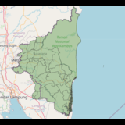
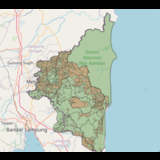
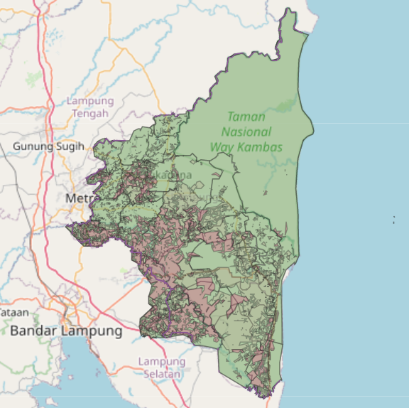
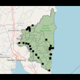

Tata Olah Lahan PerikananLuas Lahan : 143.705 Ha
Peta ini adalah peta lokasi titik - titik perikanan yang ada di Lampung Timur.

Tata Olah Lahan PertanianLuas Lahan : 111.559 Ha
Peta ini adalah peta lokasi titik - titik pertanian yang ada di Lampung Timur.

Tata Olah Lahan PerkebunanLuas Lahan : 679.666 Ha
Peta ini adalah peta lokasi titik - titik perkebunan yang ada di Lampung Timur.

Tata Olah Lahan PertambanganLuas Lahan
Peta ini adalah peta lokasi titik - titik pertambangan yang ada di Lampung Timur.